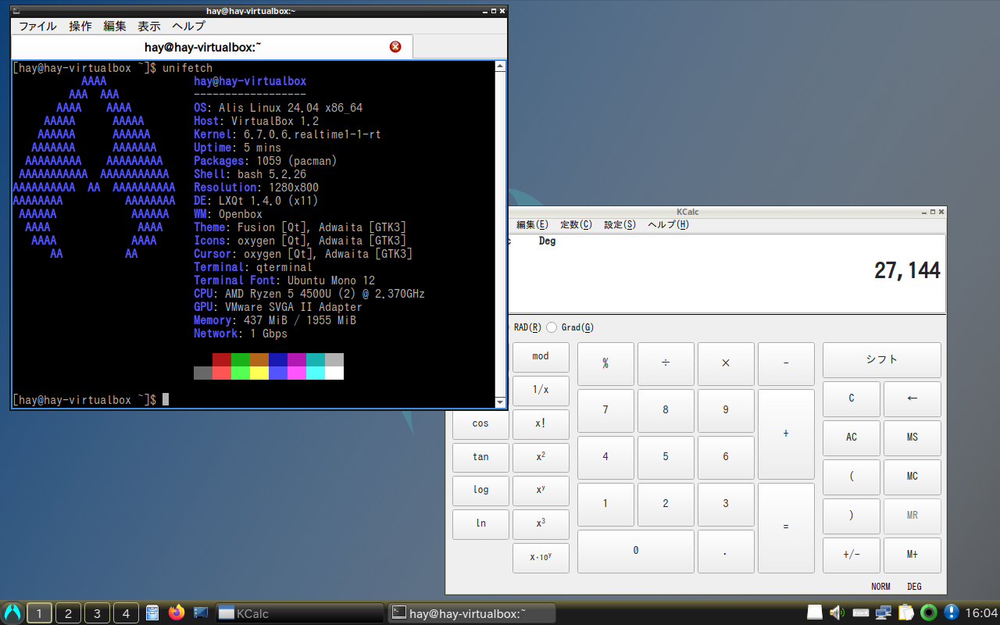

There are two ways to install Alis: you can download the ISO and burn it to media, or you can migrate from your existing Arch-based OS.
Which do you prefer?
| Download ISO | Migrate from existing environment |
Burn this disc image to a DVD or USB flash drive as installation media.
This image should only be used for new installations. Existing installations can be updated from the Software Centre or with the command "nako -Syu".
Everything is libre to download, use and share, but there is no support instead. Please use it at your own risk.
※Files downloaded from sources other than NJB's SourceForge project are not guaranteed to be the same as genuine products. For your safety, please make sure to download from the official source.
When you use Alis, you require the agreement of the End-user License Agreement (EULA) and various licenses.
Alis Linux/GNU/X End-user License Agreement
Alis comes with no guarantees or warranties of any sorts, either written or implied.
This distribution is licensed under 3-Clause BSD License.
In addition to, this includes a number of pre-existing software components, each of which is governed by its own open source license and is made available to you under the terms of such applicable license.
You are responsible for reviewing and complying with the terms of the licenses for those applicable software components.
3-clause BSD License
Copyright (c) 2022-2024, NAKA-MURA JUKEBOX.
Redistribution and use in source and binary forms, with or without modification, are permitted provided that the following conditions are met:
1. Redistributions of source code must retain the above copyright notice, this list of conditions and the following disclaimer.
2. Redistributions in binary form must reproduce the above copyright notice, this list of conditions and the following disclaimer in the documentation and/or other materials provided with the distribution.
3. Neither the name of the copyright holder nor the names of its contributors may be used to endorse or promote products derived from this software without specific prior written permission.
THIS SOFTWARE IS PROVIDED BY THE COPYRIGHT HOLDERS AND CONTRIBUTORS “AS IS” AND ANY EXPRESS OR IMPLIED WARRANTIES, INCLUDING, BUT NOT LIMITED TO, THE IMPLIED WARRANTIES OF MERCHANTABILITY AND FITNESS FOR A PARTICULAR PURPOSE ARE DISCLAIMED.
IN NO EVENT SHALL THE COPYRIGHT HOLDER OR CONTRIBUTORS BE LIABLE FOR ANY DIRECT, INDIRECT, INCIDENTAL, SPECIAL, EXEMPLARY, OR CONSEQUENTIAL DAMAGES (INCLUDING, BUT NOT LIMITED TO, PROCUREMENT OF SUBSTITUTE GOODS OR SERVICES; LOSS OF USE, DATA, OR PROFITS; OR BUSINESS INTERRUPTION) HOWEVER CAUSED AND ON ANY THEORY OF LIABILITY, WHETHER IN CONTRACT, STRICT LIABILITY, OR TORT (INCLUDING NEGLIGENCE OR OTHERWISE) ARISING IN ANY WAY OUT OF THE USE OF THIS SOFTWARE, EVEN IF ADVISED OF THE POSSIBILITY OF SUCH DAMAGE.
IPA Font License
Alis is equipped with "IPA Font". You must read and agree to the "IPA Font License v1.0" of the Character Information Technology Promotion Council.(https://moji.or.jp/ipafont/license/)
.........Did you thorough read it?
Please make sure to burn it in the DD mode. "Rufus" is recommended for MS-Windows.
Download ISO from following links.
LXQtA desktop environment that seems to embody "Simple and Robust". It is light, but it has all the functions of a desktop. Standard Machine SpecsCPU x86_64, 1 GHz or higher |
 |
|  |
LXQt AmberFor devices with older (around gen 2-8) Intel graphics. No matter how new it is, there's no turning a blind eye to history. Standard Machine SpecsCPU x86_64, 1 GHz or higher |
XfceDespite its gorgeous appearance, it is lightweight. Appearance looks like you can be smug at a cafe, but maybe it doesn't mean much. Standard Machine SpecsCPU x86_64, 1 GHz or higher |
 |
 |
PlasmaMaybe the most modern desktop flavour. There are also screen effects such as the taskbar floating and windows jiggling like jelly. Standard Machine SpecsCPU x86_64, 1 GHz or higher |
StudioA flavour for creators equipped with Plasma desktop. Drawing pictures, creating videos, modifying audio...all these tasks can be done using just this OS. Standard Machine SpecsCPU x86_64, 2 GHz or higher |  |
Please follow the steps below to perform the migration.
sudo pacman -Syu
wget https://alislinux.github.io/migrate2alis.sh
sudo bash migrate2alis.sh
When you use Alis, you require the agreement of the End-user License Agreement (EULA) and various licenses.
Please take a look at the license displayed when you run the script.
The script itself is licensed under the 3-clause BSD license.
The following operating systems do not use Arch repositories and cannot be migrated to Alis.
The following operating systems are not based on the Arch system while employing Pacman and therefore cannot be migrated to Alis.
Migration from other non-Arch-derived distributions is not possible. Please install anew.